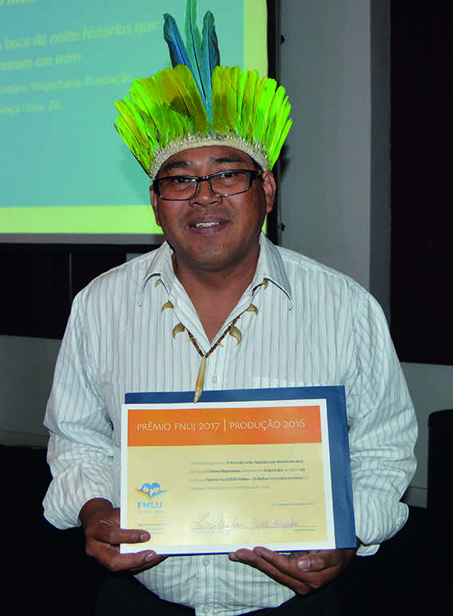

LEIA O TEXTO E DEPOIS RESPONDA AO QUE SE PEDE.
DE HOJE EM DIANTE, QUE FIQUE COMBINADO QUE NÃO HAVERÁ MAIS “ÍNDIO” NO BRASIL.
FICA ACERTADO QUE OS CHAMAREMOS INDÍGENAS, QUE É A MESMA COISA QUE NATIVO, ORIGINAL DE UM LUGAR [...]
DIGAM O QUE DISSEREM, MAS SER UM INDÍGENA É PERTENCER A UM POVO ESPECÍFICO, MUNDURUKU POR EXEMPLO.
SER “ÍNDIO” É PERTENCER A QUÊ?
É TRAZER CONSIGO TODOS OS ADJETIVOS NÃO APRECIADOS EM QUALQUER SER HUMANO.
ELA É UMA PALAVRA PRECONCEITUOSA, RACISTA, COLONIALISTA ETNOCÊNTRICA EUROCÊNTRICA [...]
WAPICHANA, CRISTINO; MUNDURUKU, DANIEL.
CURRÍCULO DA CIDADE: POVOS INDÍGENAS: ORIENTAÇÕES PEDAGÓGICAS.
SÃO PAULO: SME/COPED, 2019.
DISPONÍVEL EM: https://pt.scribd.com/document/605514795/curriculo-da-cidade-povos-indigenas.
ACESSO EM: 2 ABR. 2024.
ARQUIVO PESSOAL
DANIEL MUNDURUKU, ESCRITOR DO POVO MUNDURUKU.
DANIEL MUNDURUKU NASCEU EM 1964, NO MUNICÍPIO DE BELÉM, PARÁ.
ÍNDIGENA DA ETNIA MUNDURUKU, É PROFESSOR, FILÓSOFO E AUTOR DE LIVROS SOBRE A CULTURA INDÍGENA.
RECEBEU VÁRIOS PRÊMIOS COM SUAS OBRAS DE LITERATURA.

REPRODUÇÃO/FNLIJ
CRISTINO WAPICHANA RECEBENDO O PRÊMIO FNLIJ DE MELHOR LIVRO PARA CRIANÇA, EM 2018.
CRISTINO WAPICHANA, CONTADOR DE HISTÓRIAS, MÚSICO, COMPOSITOR, CINEASTA E PREMIADO ESCRITOR INDÍGENA, NASCEU NO MUNICÍPIO DE BOA VISTA, RORAIMA, EM 1971.
O ARTISTA TRANSMITE, COM SUAS PALAVRAS E SUA MÚSICA, HISTÓRIAS, SABERES E HERANÇAS DOS POVOS ORIGINÁRIOS.
ALGO A MAIS
Para ampliar os conhecimentos sobre os povos indígenas no Brasil, sugerimos assistir ao vídeo Indígenas do Brasil (disponível em: https://www.multirio.rj.gov.br/index.php/videos/14626-aula-11-ind%C3%ADgenas-do-brasil, acesso em: 21 maio 2024).
Em 1500, quando os portugueses chegaram ao que hoje é o Brasil, havia cerca de três milhões de indígenas de diferentes povos por aqui.
Nesse vídeo, é possível conhecer alguns deles e ver as influências que exerceram na formação do país.